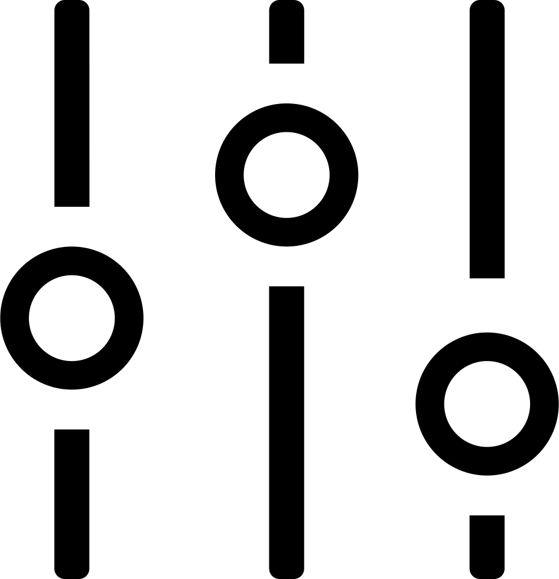

Introduzione
- Analogico vs digitale
- Vinile vs cd
- Fisico vs online

Segnale sonoro reale
Segnale analogico: rappresentazione di segnale per analogia, a tempo continuo e ad ampiezza continua
Segnale digitale o numerico: rappresentazione segnale a tempo discreto e ad ampiezza quantizzata.
Rappresentazione di un segnale != Segnale
Analogico vs digitale
- Fotografia analogica: realta' > pellicola > stampa
- Fotografia digitale: realta' > sensore > stampa
- Rappresentazione analogica di un segnale digitale
- Si parla di audio analogico quando tutte le rappresentazioni del segnale sono analogiche
- Si parla di audio digitale quando c'e' almeno un passaggio digitale
Audio analogico
Introduzione
Il suono e' analogico, nasce analogico, muore analogico.
Ogni passaggio o conversione puo' solo peggiorare la qualita' del segnale, o al massimo preservarla.
La catena del suono
Esecuzione

Ascolto
La catena del suono
Esecuzione
Registrazione

Riproduzione
Ascolto
La catena del suono
Esecuzione
Registrazione

Elaborazione
Commercializzazione
Riproduzione
Ascolto
Proprieta' del suono
- Intensita'
- Frequenze
Julia
Salvataggio analogico
- Nastri magnetici
- Vinili


Audio digitale
Introduzione
Nasce per sopperire alle problematiche dell'audio analogico
- Immunita' al rumore
- Facilita' di elaborazione
- Riproduzioni infinite
- Copie infinite
Campionamento
Rappresentare un segnale continuo con una serie finita e discreta di punti
"Esiste una sola cosa meglio del burro. Piu' burro!"
-
Julia
Teorema del campionamento di Nyquist-Shannon
Se campiono un segnale con una frequenza doppia rispetto alla sua frequenza massima, posso riprodurre esattamente il segnale di partenza.
-
Julia